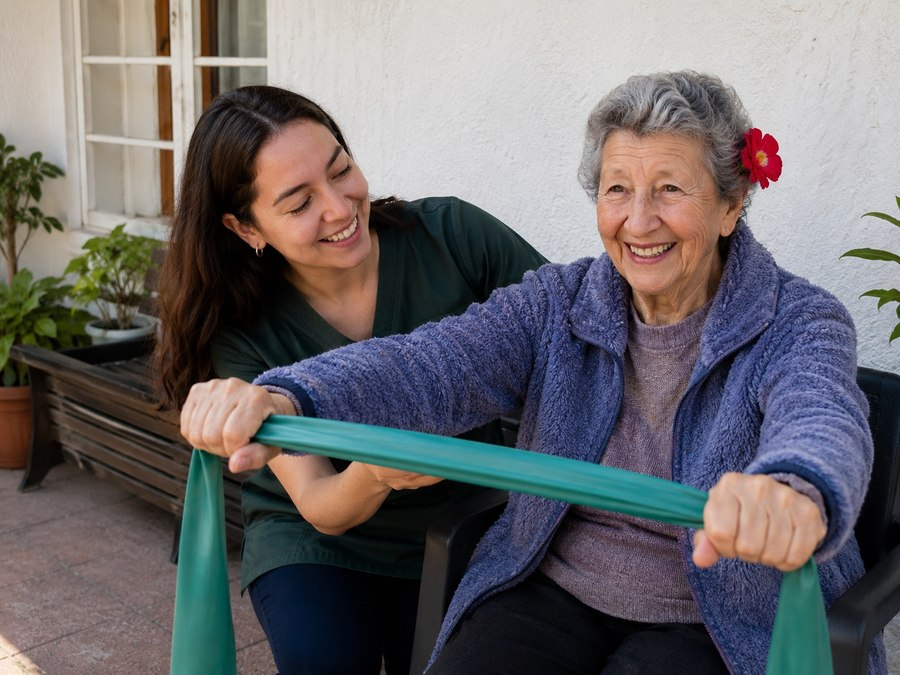

Servicio principal
Kinesiología y rehabilitación domiciliaria
Evaluamos la condición física de la persona mayor en su propio espacio y diseñamos un plan de trabajo acorde a sus objetivos, ritmo y necesidades de salud.
- Evaluación kinésica funcional en el domicilio
- Rehabilitación motora y recuperación de movilidad
- Ejercicio terapéutico y trabajo de equilibrio
- Prevención de caídas y acondicionamiento físico
- Apoyo en la recuperación post quirúrgica o post alta
